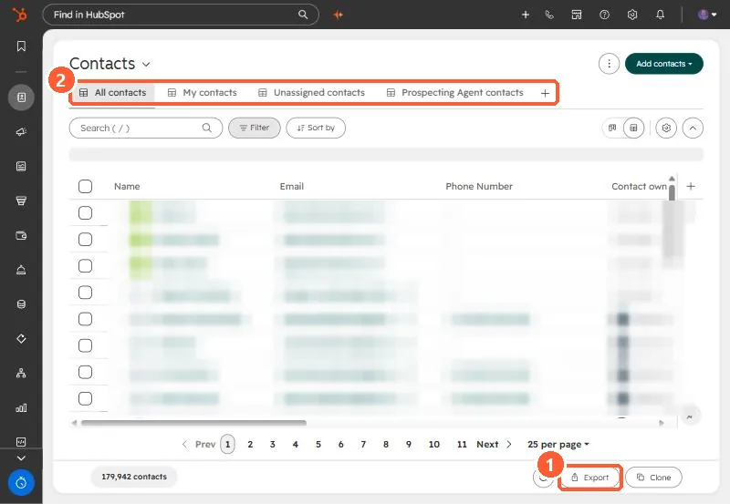

Short answer
Exports come from the view you have open. By default the file holds the view's properties and associations, with up to 1,000 associated record IDs per association column. Click Customize to export all properties, or all properties and associations, and to choose the format and header language. The download link arrives by email. Super Admins can set export notifications for large exports, up to a 275,000 record threshold.
1. Export from the view
Open Contacts or another object, pick the view, and click Export at the bottom.


2. What is in the file
- Default: properties and associations in the view, in the view's column order.
- All properties: every property, no associations.
- All properties and associations: the widest file.
- Association columns hold up to 1,000 associated record IDs plus the record name by default. Customize can export all associated records.
3. Keep an eye on exports
Settings, Import & Export lists past exports. Super Admins see everyone's. Each Super Admin can set their own notification threshold for large exports. To import a file back, include the Record ID: see updating records by Record ID.